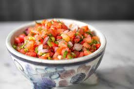

Salsa

Description
Salsa is a great snack for the big game or any time as well as a colorful and flavorful topping for chicken and the like.
Ingredients
- Tomatoes
- Onion
- Green Pepper
- Hot Pepper of your choice (optional)/li>
- Lime
- Cilantro (optional)
Instructions
- Seed and chop up tomatoes, onions, peppers, and cilantro
- Place chopped ingredients in a bowl, proportions to your taste.
- Squeeze the lime juice over the chopped ingredients and mix thoroughly.
- Place in refrigerator for a couple hours for flavors to blend and enjoy.
Back to main page (Odin Recipes)